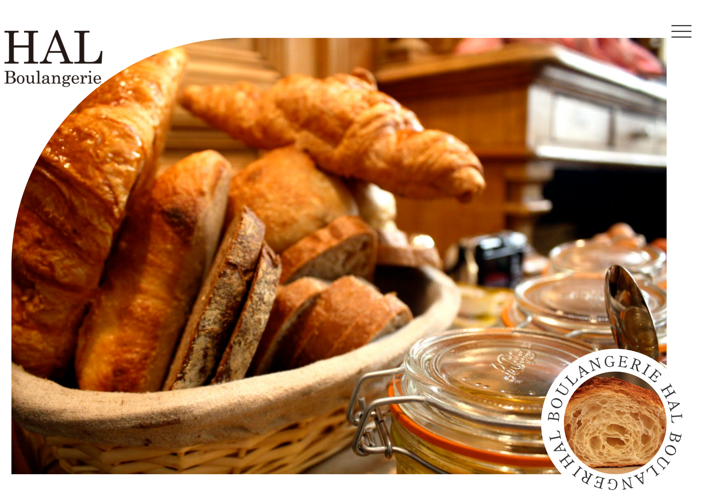
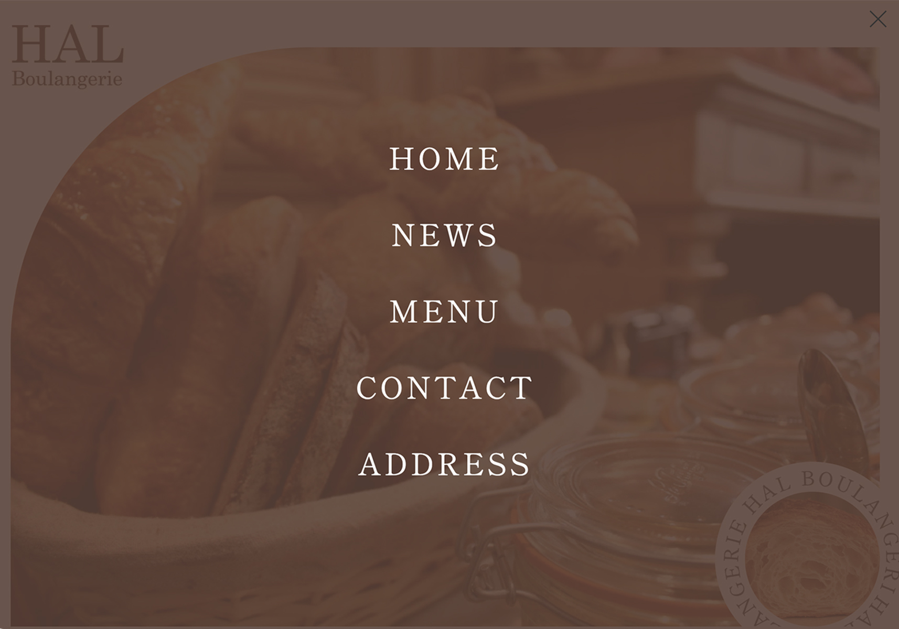
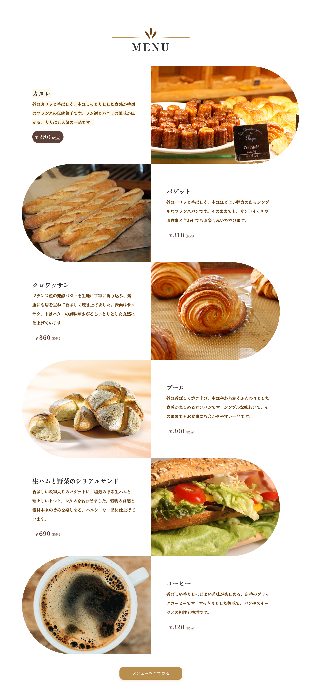
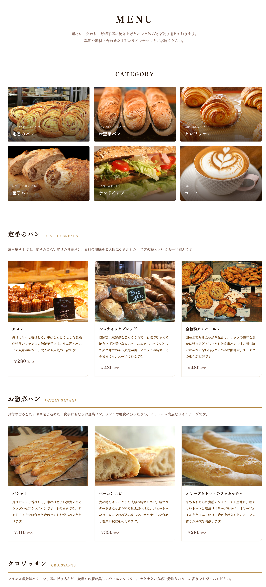
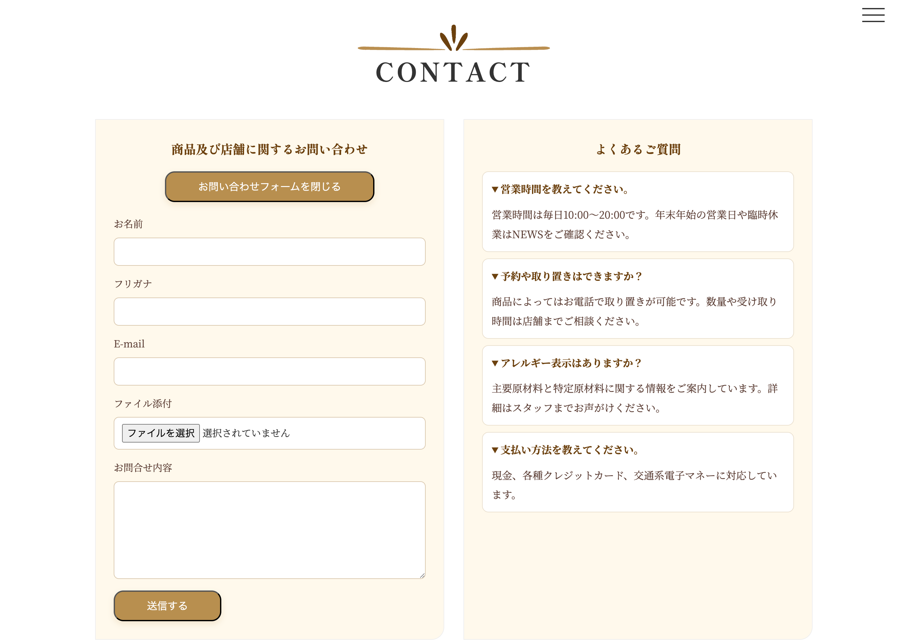
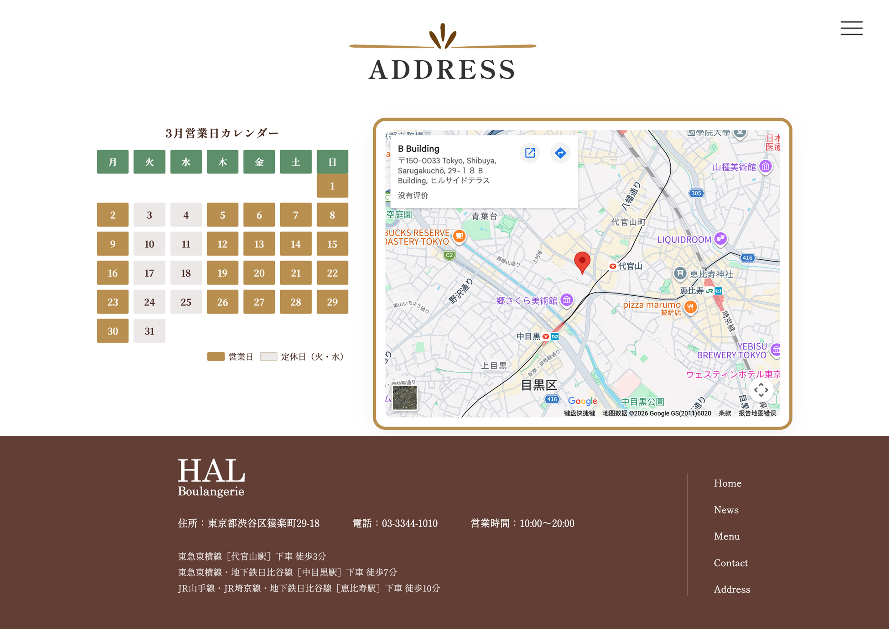

制作概要Outline
本プロジェクトでは、ベーカリー店舗の魅力を伝える公式サイトを想定し、企画・デザイン・実装まで一貫して制作しました。商品の美味しさや温かみのある雰囲気が直感的に伝わるよう、大きな写真や落ち着いた配色を用いたビジュアル表現を重視しています。ユーザーが店舗の情報を迷わず把握できる、シンプルで使いやすいUIを目指しました。
パンやスイーツに関心のある幅広い層の来店客を想定し、店舗の雰囲気や商品魅力を直感的に伝えたいユーザー。
店舗の魅力や商品情報を分かりやすく整理し、初めて訪れるユーザーでも直感的に理解できる構成にすること。
店舗の世界観を視覚的に表現しながら、商品情報やニュースを読みやすく伝え、来店意欲を高めるWebサイトを構築する。
内容詳細Detail
主ビジュアルとナビゲーションによる印象的なトップ設計

主ビジュアルは大きな写真に右下の円形サブ画像を組み合わせた構成とし、サブ画像の外周には店名の文字を配置しました。文字はゆっくりと回転する動きを加え、視線を引きつけながら、全体に上品さと程よい遊び心を与えています。

ナビゲーションはハンバーガーメニューを採用し、展開時には5つのメニュー項目を分かりやすく表示します。背景にはブラウンを用い、ベーカリーの雰囲気に調和した配色としました。
メニュー導線を意識した商品紹介設計


メニューでは、サイト全体で用いている円弧型のデザイン要素を継承し、左右交互に画像とテキストを配置して、おすすめ商品を紹介しています。ホバー時には説明や価格を強調表示し、視覚的に分かりやすく閲覧できるようにしました。また、詳細ページでは商品を6つのカテゴリに分けて掲載し、店内の商品や特徴がひと目で伝わる構成としています。
ギャラリーによる空間イメージの演出
ギャラリーでは、店内外の写真を自動スライドで表示し、視覚的に空間の雰囲気が伝わるように構成しました。写真にあわせて店舗のコンセプトや想いを表現するテキストを配置することで、ユーザーに臨場感を与え、ブランドの世界観や上質な雰囲気を感じられるように設計しています。
お問い合わせ機能と分かりやすい店舗案内

Contactでは、お問い合わせフォームを実装し、テキスト入力や画像の送信に対応しました。右側にはFAQを掲載し、ユーザーが疑問をすぐに確認できるようにしています。

Googleマップと営業カレンダーを配置し、店舗の場所や営業日を分かりやすく確認できるようにしました。フッターには住所・電話番号・営業時間・交通手段を整理して掲載しています。